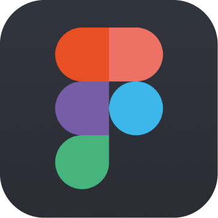

BriefWith previous projects I have used Sketch or Adobe XD. However, having read a number of interesting things, I wanted to learn more about Figma. So I set myself the task of redesigning Tesco’s Groceries app with the purpose of improving navigation and introducing illustration.

ResearchI conducted a content audit of the current application, exploring the features and ways I could create a better flow. Followed by a card sorting exercise to rearrange this content. I felt only 4 pages were necessary - Home, Browse (renamed from Search), Favourites and Basket. I decided not to include the Orders page, because I felt it was of less importance and questioned how often users visited this page. Obviously without conducting a usability test and gaining a better understanding I could be wrong about this assumption, but for the purpose of the redesign I stuck with my decision moving it elsewhere in the application.
ProcessWith the navigation understood, I moved onto sketching screen layouts. I felt there was definitely a more coherent way of displaying the content, ensuring consistent design across the application. As a big advocate for sticking to mental models, I think it is majorly important that the user always knows were to look for information regardless of whether it is their 1st or 100th time using a platform.
Some examples of inconsistent or hard to use design I found along the way; 1. The toggle/slider component used on home and favourites pages vary largely in padding and colour. 2. ‘Show all’ link on the Home Page doesn’t have a surrounding button, whereas ‘Filter’ which sits in a similar position on the Favourites page does have a button shape. 3. Only the home page has a header displaying the Tesco branding and links to 2 other pages (Book a Slot and Profile). This means the user always has to navigate back to the home page to access those 2 pages, rather than it being in a consistent position throughout the application. 4. ’Browse all groceries’ link is hidden within the home page. This could be easily incorporated into the search page making it easier for the user to shop. 5. The ‘Browse all groceries’ page uses a long list of options, however this makes the images to the left very small and difficult to identify.
These are just a few areas to improve. Once I had sketched a design for each page, it was time to jump into Figma. I started by building low fidelity wireframes, getting used to the different tools, features and hotkeys available.
OutcomeFigma works very similar to the other design tools I’ve used, so it didn’t take long to get the hang of it. When wireframing, it worked seamlessly, I had no issues. Once I had created blockframes, I developed these into high fidelity wireframes by adding content and illustrations. I really like that I can integrate my vector illustrations from Illustrator, rather than having to import each one as an image. I have the ability to resize and change the shape of any illustration after pasting.
Next, I tested the prototyping features. I'm used to Adobe XD’s ‘Auto-Animate’ which, once you get the hang of renaming your components correctly, produces smooth screen transitions that work extremely well. I have even produced simple animated gifs using this feature before. Therefore I was pleased to see an equivalent in Figma called ‘Smart Animate’ which works pretty much the same. I was also interested by the code section within Figma, you can click on any component and the relevant code would appear on the right hand side. I can’t comment on how accurate or useful this data is as I haven't used it myself but the idea is definitely interesting!
However, there were a few things I struggled with prototyping. I found that when I hit play to start the preview, my screens didn’t fit into the device frame that was chosen, even though it was supposedly the same screen size as my artboard. Therefore this caused further messing around with my artboard sizing and the contents within each of the screens which became quite tedious. Another issue I felt was that there isn't a record feature integrated into the preview screen like there is in Adobe XD that allows you to record your prototyping movements within the same screen. I presume with Figma, I’d have to use an external application to record my mouse movements.
Reflections So here’s a look at the final screen designs below. Hopefully you can see improvements from the existing screen designs. I’m pleased with the outcome seeing as this was a rather quick turnaround project.
I believe there is more coherency in my version of the app design as each page follows a similar template. The Tesco branded header is the same across all pages - now allowing the user to access those 2 pages in the top right from any page. Followed by the blue call to action section, which includes an illustration and a clear call to action - improving on the information architecture. I’ve added numerous illustrations to the platform, this is more of a personal touch as I really enjoy illustration when it comes to app/web design. Being a visual user myself I find it easier navigating through screens that uses imagery over text, as well as the fact it’s simply more appealing than large lumps of text. The illustrations are nothing complex or extremely detailed but they fit the purpose of improving the aesthetics.
Overall I’m really pleased with how this side project turned out. I’ve managed to learn a new design tool, and improve on the visual aesthetics and design consistency of Tesco's Groceries App. In terms of Figma as a design tool, for wireframing it was extremely easy to use and I thoroughly enjoyed diving into something new. This definitely won’t be my last time using Figma.